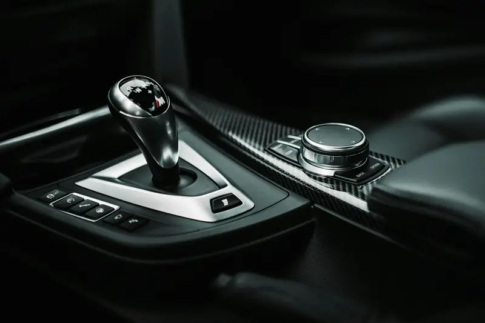

Group 01 / 02
Diagnostics, Servicing and Electronics
Many Mercedes gearbox faults are electronic or fluid-related. These services fix them without opening the gearbox.
5 servicesA jolt from second to third. A pause before reverse engages. A “transmission malfunction” message on a hot afternoon. Mercedes gearboxes are smart, but heat and old fluid wear them down quietly. We find the real cause first, often before any part needs replacing.
Gearbox problems rarely fix themselves. Here is what common symptoms usually point to.
Likely causeWorn fluid, adaptation values or valve body
Book soonLikely causeConductor plate or control unit fault (limp mode)
Book right awayLikely causeLow fluid, internal leak or worn clutches
Book soonLikely causeTorque converter or dual-clutch wear
Book within daysLikely causeConnector sleeve, pan gasket or cooler line leak
Book soon. Low fluid damages clutchesLikely causeOverheated or degraded fluid
Stop driving and call usLikely causeBearing, pump or planetary gear wear
Book within daysGearbox faults rarely stay small. One worn part puts extra strain on the next, and a simple repair can turn into a full rebuild within weeks.
Early repair also protects your safety. A gearbox that slips, hesitates or drops into limp mode can leave you without power when merging or overtaking on busy roads like the E11.
From a fluid service to a full rebuild, we handle every level of gearbox work on your Mercedes.
Many Mercedes gearbox faults are electronic or fluid-related. These services fix them without opening the gearbox.
5 servicesWe read gearbox fault codes, live clutch data and adaptation values with Mercedes-compatible software. A road test confirms the symptom, so you get a clear answer before any work starts.
Ask about thisMercedes gearboxes have no dipstick and must be filled by the overflow method at a set temperature. We drain, replace the filter and refill with the correct MB-approved fluid.
Ask about thisHarsh shifts on newer Mercedes models often need software and relearning, not new parts. We update the gearbox control unit and reset adaptations so shifts feel smooth again.
Ask about thisThe conductor plate holds the gearbox’s electronic brain and sensors. When it fails, the car often gets stuck in one gear. We replace it and code the new unit to your car.
Ask about thisGearbox fluid leaks often come from the electrical connector sleeve, pan gasket or cooler lines. We find the exact source, replace the seal and top up to the correct level.
Ask about this
When wear goes deeper than fluid and electronics, these repairs restore smooth, reliable shifting.
5 servicesThe valve body directs fluid to each clutch pack. Worn valves cause slow or rough shifts. We clean, repair or replace the valve body, then run a full adaptation.
Ask about thisA worn torque converter causes shudder at low speed or slipping on the highway. We test lock-up function and replace the converter if needed, then flush the cooler lines.
Ask about thisA-Class, CLA and GLA models with the 7G-DCT can shudder when pulling away. We diagnose clutch wear and mechatronic faults, then replace parts and relearn clutch points.
Ask about thisA rebuild replaces worn clutches, steel plates, seals, bearings and solenoids. We strip the gearbox, measure every part and rebuild it to Mercedes specification with fresh fluid.
Ask about thisWhen damage is severe, a replacement gearbox can cost less than a rebuild. We fit a genuine or remanufactured unit, code it to your car and run full adaptations.
Ask about thisEach Mercedes gearbox has its own weak points. Knowing them lets us check the right parts first.
Even new Mercedes gearboxes need expert care. In January 2026, Mercedes recalled certain 2025 E-Class models over a faulty transmission wiring harness. On older 7G-TRONIC models, still common in the UAE, the conductor plate remains the most frequent failure. AMG models now use the 9-speed SPEEDSHIFT MCT, which needs AMG-specific checks.
Heat is the biggest enemy of any automatic gearbox. Transmission fluid lasts about 100,000 miles at 80°C (175°F), but its life halves with every 11°C (20°F) rise above that. Above 121°C (250°F), rubber seals begin to harden.
The Automatic Transmission Rebuilders Association links 90% of all transmission failures to overheating. Abu Dhabi traffic, 45°C summers and long idling with the AC on full push gearbox temperatures higher than factory schedules assume. Fresh fluid and a healthy cooling system are your best protection.
Mercedes calls some gearbox fluid long-life, but heat changes that. Here is a practical guide.
Independent specialists recommend changing 7G-TRONIC fluid every 40,000 to 60,000 miles. Conductor plate and valve body failures are much more common on gearboxes that skip it. For the 9G-TRONIC, the recommended interval is six years or 60,000 miles, whichever comes first.
A healthy gearbox can last the life of your Mercedes. These simple habits protect it in Abu Dhabi conditions.
Fresh MB-approved fluid cools and protects clutches, especially through long Abu Dhabi summers.
Low fluid causes overheating and slipping, so book a check when you see red spots.
Your gearbox fluid is cooled through the radiator, so engine overheating hurts both.
Shifting into Reverse or Drive while rolling puts sudden stress on clutches.
In heavy traffic, shift to Park during long stops to reduce heat build-up.
Mercedes releases gearbox software updates that fix shifting faults without new parts.
The right fix depends on what failed and how far the damage spread. This is how we guide the decision.
Fluid service, software update and adaptation
WhyFixes many faults without opening the gearbox
Conductor plate or mechatronic repair
WhyReplaces the failed electronics only
Valve body repair
WhyRestores correct fluid control to the clutches
Full rebuild
WhyReplaces worn clutches, seals and bearings
Gearbox replacement
WhyOften cheaper than rebuilding severe damage
Five clear steps, the same on every job, so you always know what is happening and why.
We read fault codes, review live gearbox data and road test the car. This shows the real cause before anything is taken apart.
We test the fluid level, colour and smell at the correct temperature. Burnt fluid or metal particles tell us how deep the wear goes.
You get a clear report and a line-by-line quote first. No work starts until you approve it, and we call before any extras.
We fit genuine or OE-quality parts and use the correct MB-approved fluid. Software is updated and every new part is coded to your car.
We run full gearbox adaptations and a road test in real traffic. You get your car back with a short report of all work done.
MOIAT-certified, Mercedes-focused and rated 4.5 from 765 Google reviews. Here is what that means for your car.
Our team knows the weak points of every 5G, 7G, 9G and DCT unit.
Mercedes-compatible software reads live clutch data and runs guided gearbox tests.
We try updates, flushing and adaptations before replacing any expensive part.
Only MB-approved fluid, filled by the overflow method at the right temperature.
Your quote shows both part options side by side, with the price difference.
You get a line-by-line quote, and we call you before doing any extra work.
It depends on the gearbox and the fault. A fluid service or software update costs far less than a conductor plate, valve body or full rebuild. We give you a fixed quote after diagnosis.
Fluid services and software updates usually take one day. Conductor plate and valve body repairs take one to three days. Full rebuilds take longer, depending on parts.
Limp mode locks the gearbox in one gear to protect it. You can drive slowly to a safe place or to us, but long drives can cause more damage. Book a scan as soon as possible.
No. Some fluid is labelled long-life, but it still breaks down with heat and age. In Abu Dhabi conditions, regular fluid changes are one of the best ways to avoid major repairs.
Often, yes. For the 9G-TRONIC, a Mercedes technical bulletin lists oil level checks, valve flushing, software updates and adaptation as the first steps for rough shifting. We follow the same order before replacing parts.
It is the electronic control board inside many Mercedes gearboxes, holding the sensors and control unit. If your car gets stuck in gear with speed sensor codes, it is a likely cause. We confirm it with diagnostics before replacing it.
Yes. We repair AMG SPEEDSHIFT MCT units and the 7G-DCT dual-clutch gearbox used in the A-Class, CLA and GLA, including clutch and mechatronic work.
 Brake RepairPads, discs, DOT 4 Plus fluid, ABS and AMG brakes.
Brake RepairPads, discs, DOT 4 Plus fluid, ABS and AMG brakes. Engine RepairTiming chains, head gaskets, leaks, turbos and AMG V8s.
Engine RepairTiming chains, head gaskets, leaks, turbos and AMG V8s. PaintingPaint-code matching, panel paint, resprays and ceramic coating.
PaintingPaint-code matching, panel paint, resprays and ceramic coating. Body ShopCollision, dent, bumper and aluminium repair with ADAS calibration.
Body ShopCollision, dent, bumper and aluminium repair with ADAS calibration. DiagnosticsXENTRY full-module scans, live data and warning lights.
DiagnosticsXENTRY full-module scans, live data and warning lights. Oil ChangeMB 229-approved oil, genuine filters and ASSYST reset.
Oil ChangeMB 229-approved oil, genuine filters and ASSYST reset. Electrical RepairBattery, SAM module, wiring, 48V and lighting faults.
Electrical RepairBattery, SAM module, wiring, 48V and lighting faults. AC RepairR1234yf regas, compressors, leaks and climate control.
AC RepairR1234yf regas, compressors, leaks and climate control.A small shifting fault today can become a full rebuild tomorrow. Book a gearbox diagnosis and get a clear answer on what your Mercedes needs. Our Mercedes transmission repair team in Abu Dhabi is ready to help.